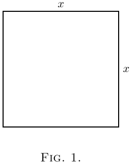
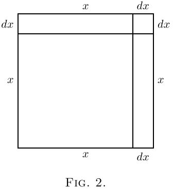
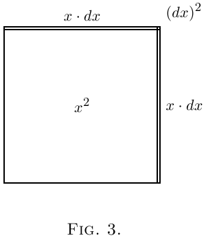

第 2 章不同程度的微小性
我们会发现，在计算过程中，必须处理具有不同微小程度的数量。
我们还需要学会在什么情况下可以认为微量已经微小到可以忽略不计。所有这一切都取决于微小的相对程度。
在制定任何规则之前，想想一些熟悉的例子。一个小时有 60 分钟，一天有 24 小时，一周有 7 天。因此，一天有 1440 分钟，一周有 10080 分钟。
显然，与整整一周相比，1 分钟是一个非常小的时间量。事实上，前人曾认为与一小时相比，一分钟很小，称之为“一分钟”（one minùte），意思是微不足道的一小点，也就是六十分之一。当他们需要更小的时间单位时，将每一分钟分成 60 个更微小的部分，在伊丽莎白女王时代，这些微小部分被称为“秒钟”（second minùtes，即：第二级微小单位）。如今，我们称这些微量为“秒”(second)。但很少有人知道为什么它们被称为“秒”。
现在，如果 1 分钟与整整一天相比已经如此微小，那么 1 秒钟相比之下又是多么微小！
再想想一分钱和一元：一分钱只值一元的百分之一。一分钱多或少对比一元几乎不重要：它可以被看作是一个很小的量。但是一分钱和 1000 元相比这个更大的金额相比，就像是一分钱的千分之一与一元比较一样，微不足道。而在百万富翁的财富面前，一元不过是微不足道的量。
现在，如果我们将某个数值分数定为相对较小的比例，那么就可以轻松地列出其他更高阶微小程度的分数。比如，如果为了表示时间，\(\frac{1}{60}\) 被称为一个小分数，那么 \(\frac{1}{60}\) 的 \(\frac{1}{60}\)（即一个小分数的小分数）可以被视为第二阶微小量。[^1]
数学家们谈论的“大小”二阶，实际上是指第二级的微小性。这对初学者来说非常困惑。
或者，如果我们将 \(\frac{1}{100}\) 定为微小的分数，那么百分之一的百分之一（即：\(\frac{1}{10,000}\)）将是第二阶微小的小分数；而 \(\frac{1}{1,000,000}\) 将是第三阶微小的小分数，表示百分之一的百分之一的百分之一。
最后，假设为了精确起见，我们将 \(\frac{1}{1,000,000}\) 视为“微小”。例如，如果一只顶级计时器每年最多误差不超过半分钟，它必须保持1,051,200分之一的精度。就此目的，我们将 \(\frac{1}{1,000,000}\) 视为一个小量，\(\frac{1}{1,000,000}\) 的 \(\frac{1}{1,000,000}\)（即 \(\frac{1}{1,000,000,000,000}\)）将是第二阶微小量，相比之下可以完全忽略不计。
然后我们看到，一个微量越小，第二阶相应的小量就越可以忽略不计。因此，我们知道在所有情况下，只要第一阶的小量足够小，就可以忽略第二阶、第三阶（或更高阶）的微小量。
但必须记住，如果微量出现在表达式中，作为与其他因子相乘的因子，它们可能会变得重要，特别是当其他因子本身很大时。即使是一个便士，如果它与几百倍相乘，也会变得重要。
在微积分中，我们用 \(dx\) 来表示 \(x\) 的微小部分。诸如 \(dx\)、\(du\) 和 \(dy\) 这样的量被称为“微分”，即 \(x\) 或 \(u\) 或 \(y\) 的微小变化。（可以读 dee-eks 、dee-you 或 dee-wy。如果 \(dx\) 是 \(x\) 的微小部分，本身相对很小，并不意味着像 \(x · dx\)、\(x^2\, dx\) 或 \(a^x\, dx\) 这样的量可以忽略不计。但是 \(dx × dx\) 会被忽略不计，因为它是一个第二阶的微量。
举一个非常简单的例子作为说明。
假设有一个数量 \(x\) 可以增长一点，得到 \(x + dx\)，其中 \(dx\) 就是通过增长加上去的微量。这个值的平方是 \(x^2 + 2x · dx + (dx)^2\)。第二项不是可以忽略的，因为它是一个一阶微量；而第三项是第二阶微量，是 \(x^2\) 的一小部分的一小部分。因此，如果我们将 \(dx\) 看作数值上大约是 \(x\) 的 \(\frac{1}{60}\)，那么第二项将是 \(x^2\) 的 \(\frac{2}{60}\)，而第三项将是 \(x^2\) 的 \(\frac{1}{3600}\)。显然，最后一项比第二项更不重要。但是，如果我们进一步将 \(dx\) 看作仅为 \(x\) 的 \(\frac{1}{1000}\)，那么第二项将是 \(x^2\) 的 \(\frac{2}{1000}\)，而第三项将仅为 \(x^2\) 的 \(\frac{1}{1,000,000}\)。


在几何上，可以这样表示：画一个正方形(图1)，它的一边代表 \(x\)。现在假设这个正方形的每一边都增长了一个微量 \(dx\)。增大的正方形由原始的正方形 \(x^2\)、顶部和右侧的两个矩形组成，每个矩形的面积是 \(x · dx\)(或加在一起是 \(2x · dx\))，右上角的小正方形的面积是 \((dx)^2\)。在图2中，我们让 \(dx\) 占了 \(x\) 相当大一部分 -- 约 1/5。但是，假设我们将 \(dx\) 设定为仅为 \(x\) 的 1/100，大约是用细笔画出的墨迹线的厚度。那么，右上角的小正方形的面积将是 \(x^2\) 的 1/10,000，几乎看不见。显然，如果我们认为增量 \(dx\) 本身足够小，那么 \((dx)^2\) 是可以忽略的。

我们做个比喻。
假设一个百万富翁对他的秘书说：下周不管我收到多少钱，都会给你这笔收入的一小部分。假设秘书又对他儿子说：我会给你我得到的一小部分。假设在每种情况下的比例都是 1/100。现在，如果百万富翁先生在下周收到了1000元，那么秘书将收到10元，而男孩将得到1毛钱。10元相对于1000元很少；但1毛钱也是一个非常小的小量，是一个非常次要的量。如果比例不是设为1/100，而是定为1/1000，那么差距会有多大？那时，百万富翁得到1000元，秘书只会得到1元，而男孩得到的只有一分钱！
牛可能会担心一只普通大小的跳蚤 -- 这是一个第一阶微小量的小生物。但是它可能不会为跳蚤身上的跳蚤烦恼；跳蚤身上的跳蚤是第二阶微小量，可以忽略不计。即使是一打跳蚤的跳蚤，对于这头牛来说也不会有太大的影响。